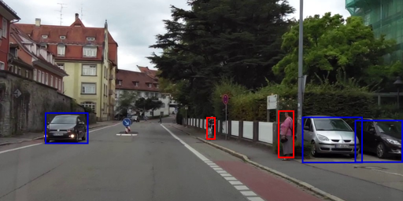

|
TI Deep Learning Product User Guide
|
|
TI Deep Learning Product User Guide
|
Important Note: Readers are advised to read TIDL Product summary and TIDL-RT overview before reading this page.
This page is targeted towards readers who have TIDL already downloaded and want to work with TIDL-RT which is the low level user interface of TIDL. Please note that TIDL provides a higher level software interface via open source runtimes as described in Open Source Runtime. Users are highly recommended to work with the open source run time interface.
Note
Before proceeding, please make sure that
- You can see the software package in your system as described in TIDL package contents.
- You have downloaded all the dependencies as described.
- If you are not familiar with concepts of deep learning or machine learning, and if this is your first experience with convolution neural networks (CNNs), it is recommended that you get started here.
Using TIDL-RT, you are expected to be able to:
.bin files that can be used by TIDL-RT Inference.tidlModelImport converts networks trained via open source frameworks (like Caffe or TensorFlow) into a format that TIDL-RT Inference can use to execute these networks for inference.tidlModelImport uses the quantization statistics tool internally to measure any deviation in inference accuracies and layer level outputs arising due to quantization.tidlModelImport uses the graph compiler tool internally to generate optimized execution order and dataflow sequences to maximize inference performance..bin files and validate the results..bin files and validate the results.Note
The following model formats are currently supported:
- Caffe models (using
.caffemodeland.prototxtfiles)- Tensorflow models (using
.pbor.tflitefiles)- ONNX models (
.onnxfiles)
This guide demonstrates the above features and documents the steps that shall help you get started on TIDL-RT inference.
Follow the steps defined in Dependent Software Components section
This section elaborates further on the import process with examples on importing models trained with Caffe and TensorFlow into TIDL-RT. The following models will be used in this guide:
Note
The installation does not create the directories required for storing the downloaded models mentioned in this guide. You need to create the directories as required, if they are not already present.
Note
The paths used in this guide are for the purpose of demonstration. You can create your own configuration file (containing the appropriate paths for collecting input models and storing output files), and pass that file's location as an argument to thetidlModelImporttool.
Downloading the model
Download the tarball containing the trained model from here.
You need to extract mobilenet_v2_1.0_224_frozen.pb from the tarball and place it in the ti_dl/test/testvecs/models/public/tensorflow/mobilenet_v2 directory.
The downloaded TensorFlow models cannot be imported until they are optimized for inference. Execute optimize_for_inference.py (distributed with TensorFlow installation) to create an optimized model file.
Importing the model
To import models using the tidlModelImport tool, you need to use a configuration file that provides the import parameters to the tool. The various parameters and the supported values for each parameters are documented here.
You can use the configuration file ti_dl/test/testvecs/config/import/public/tensorflow/tidl_import_mobileNetv2.txt (distributed with the installation) to import this model.
Execute the import tool to import the model.
For Linux Users
user@ubuntu-pc$ cd ${TIDL_INSTALL_PATH}/ti_dl/utils/tidlModelImport user@ubuntu-pc$ ./out/tidl_model_import.out ${TIDL_INSTALL_PATH}/ti_dl/test/testvecs/config/import/public/tensorflow/tidl_import_mobileNetv2.txt --numParamBits 15
For Windows Users
C:\> cd %TIDL_INSTALL_PATH%\ti_dl\utils\tidlModelImport C:\> out/tidl_model_import.out.exe %TIDL_INSTALL_PATH%\ti_dl\test\testvecs\config\import\public\tensorflow\tidl_import_mobileNetv2.txt --numParamBits 15
Note
MobileNetV2 trained on TensorFlow needs 16 bits for better accuracy. Therefore, it is required to override the default value ofnumParamBitswhile importing.
The import tool will perform quantization and carry out graph compilation and generate the following files:
.bin files used for inferenceti_dl/test/testvecs/config/tidl_models/tensorflow/tidl_net_mobilenet_v2_1.0_224.bin containing the layers in the order of execution, and the layers parameters (weights , bias etc).ti_dl/test/testvecs/config/tidl_models/tensorflow/tidl_net_mobilenet_v2_1.0_2241.bin containing the dataflow sequences.If you built the tidlModelGraphviz tool as described in Dependent Software Components section, the network graph representation is also generated in ti_dl/test/testvecs/config/tidl_models/tensorflow/tidl_net_mobilenet_v2_1.0_224.bin.svg.
Downloading model
Download the tarball containing the trained model from here.
You need to extract pelee_304x304_acc7094.caffemodel and deploy.prototxt from the tarball and put it inside ti_dl/test/testvecs/models/public/caffe/peele/pelee_voc/ directory.
The downloaded pelee model should be imported with a higher confidence_threshold parameter for better accuracy. Modify the file ti_dl/test/testvecs/models/public/caffe/peele/pelee_voc/deploy.prototxt to use 0.4 as confidence_threshold.
Importing the model
After the above changes are made to the model, it can be imported by following the steps similar to the ones described in Importing MobileNetV2 model for image classification. You can use ti_dl/test/testvecs/config/import/public/caffe/tidl_import_peeleNet.txt (distributed with the installation) to import the model.
For Linux Users
user@ubuntu-pc$ cd ${TIDL_INSTALL_PATH}/ti_dl/utils/tidlModelImport user@ubuntu-pc$ ./out/tidl_model_import.out ${TIDL_INSTALL_PATH}/ti_dl/test/testvecs/config/import/public/caffe/tidl_import_peeleNet.txt
For Windows Users
C:\> cd %TIDL_INSTALL_PATH%\ti_dl\utils\tidlModelImport C:\> out/tidl_model_import.out.exe %TIDL_INSTALL_PATH%\ti_dl\test\testvecs\config\import\public\caffe\tidl_import_peeleNet.txt
The following files are generated by the import:
.bin files used for inferenceti_dl/test/testvecs/config/tidl_models/caffe/tidl_net_peele_300.binti_dl/test/testvecs/config/tidl_models/caffe/tidl_io_peele_300_1.binIf you built the tidlModelGraphviz tool as described in Dependent Software Components section, the network graph representation is also generated in ti_dl/test/testvecs/config/tidl_models/caffe/tidl_net_peele_300.bin.svg.
Downloading the model
Download the trained model from here and put it in ti_dl/test/testvecs/models/public/caffe/jsegNet21 directory.
Note
Do not usesave link asorcopy link locationoptions to download binary files from github.com, use theDownloadbutton instead.
Download the deploy.prototxt file from here and put it in ti_dl/test/testvecs/models/public/caffe/jsegNet21 directory.
Note
Do not usesave link asorcopy link locationoptions to download text files from github.com, use theRawbutton to open the file and then usesave as ...option.
Importing the model
The model can be imported by following steps similar to the the ones described in Importing MobileNetV2 model for image classification. You can use ti_dl/test/testvecs/config/import/public/caffe/tidl_import_jSegNet.txt (distributed with the installation) to import the model.
For Linux Users
user@ubuntu-pc$ cd ${TIDL_INSTALL_PATH}/ti_dl/utils/tidlModelImport user@ubuntu-pc$ ./out/tidl_model_import.out ${TIDL_INSTALL_PATH}/ti_dl/test/testvecs/config/import/public/caffe/tidl_import_jSegNet.txt
For Windows Users
C:\> cd %TIDL_INSTALL_PATH%/ti_dl/utils/tidlModelImport C:\> out/tidl_model_import.out.exe %TIDL_INSTALL_PATH%\ti_dl\test\testvecs\config\import\public\caffe\tidl_import_jSegNet.txt
The following files are generated by the import:
.bin files used for inferenceti_dl/test/testvecs/config/tidl_models/caffe/tidl_net_jSegNet_1024x512.binti_dl/test/testvecs/config/tidl_models/caffe/tidl_io_jSegNet_1024x512_1.binIf you built the tidlModelGraphviz tool as described in Dependent Software Components section, the network graph representation is also generated at ti_dl/test/testvecs/config/tidl_models/caffe/tidl_net_jSegNet_1024x512.bin.svg.
The installation comes with a PC simulation tool ti_dl/test/PC_dsp_test_dl_algo.out that can be used to execute imported .bin files and verify the inference result before running them on a development board. This helps in easily identifying issues with the model and debugging.
The PC simulation tool uses the file ti_dl/test/testvecs/config/config_list.txt to read the list of inference tests to run. The format of the file is as follows:
Each line that starts with 1 must point to a file containing the inference parameters to run an imported model. The various parameters and the supported values for each parameters are documented here.
Note
The lines that start with2are ignored.
The test sequence stops when it hits a line that starts with0.
Note
The paths in the fileti_dl/test/testvecs/config/config_list.txt(e.g./path/to/inference/parameter/file/to/be/executed/1) must be relative toti_dl/utils/test.
For example, to add the inference parameter fileti_dl/test/testvecs/config/infer/public/caffe/tidl_infer_pelee.txtto the list, you must add the following:1 testvecs/config/infer/public/caffe/tidl_infer_pelee.txt
In this section, we will test the models imported in Importing models using the inference parameter files distributed with the installation.
Add the following lines at the beginning of ti_dl/test/testvecs/config/config_list.txt:
Execute command PC_dsp_test_dl_algo.out from ti_dl/test directory.
Decoding the output
The test uses the ti_dl/test/testvecs/input/airshow.bmp as input image and 896 as test label.
Note
This information is obtained from the input configuration fileti_dl/test/testvecs/config/classification_list_1.txt.
The input configuration file is provided asinDataparameter inti_dl/test/testvecs/config/infer/public/tensorflow/tidl_infer_mobileNetv2.txt
The numbers printed by the classification test represent the following information:
For example, the above output indicates that the simulation took 655.09 milliseconds, the test input label was 896, the inferred label was 896, and the TOP-1 and TOP-5 accuracies are both 1.0.
Add the following lines at the beginning of ti_dl/test/testvecs/config/config_list.txt:
Execute command PC_dsp_test_dl_algo.out from ti_dl/test directory.
Decoding the output
The test uses the ti_dl/test/testvecs/input/ti_lindau_000020.bmp as input image for object detection.
The test prints the time taken by PC simulation and stores the list of detected objects and the coordinates for each detected object in ti_dl/test/testvecs/output/pelee.bin_ti_lindau_000020.bmp_000000.txt. It also generates a post-processed output image at ti_dl/test/testvecs/output/pelee.bin_ti_lindau_000020.bmp_000000_tidl_post_proc2.png that shows the detected objects and the bounding boxes.
| Input | output --------------------— |
|---|---|
Input image to object detection application |

output of object detection application |
Add the following lines at the beginning of ti_dl/test/testvecs/config/config_list.txt:
Execute command PC_dsp_test_dl_algo.out from ti_dl/test directory.
The test uses the ti_dl/test/testvecs/input/ti_lindau_I00000.bmp as input image for semantic segmentation.
The test prints the time taken by PC simulation and stores the generates a post-processed output image at ti_dl/test/testvecs/output/jsegNet1024x512.bin_ti_lindau_I00000.bmp_000000_tidl_post_proc3.png that shows the generated segmentation masks for the detected objects.
| Input | output --------------------— |
|---|---|
Input image to semantic segmentation application |
output of semantic segmentation application |
Note
You can also execute all 3 of the above tests with a single command ofPC_dsp_test_dl_algo.outby adding the following lines in the beginning ofti_dl/test/testvecs/config/config_list.txt:1 testvecs/config/infer/public/tensorflow/tidl_infer_mobileNetv2.txt 1 testvecs/config/infer/public/caffe/tidl_infer_pelee.txt 1 testvecs/config/infer/public/caffe/tidl_infer_jSegNet.txt 0
The .bin files generated by tidlModelImport can be tested on development board. This section describes the steps required to execute the imported models on Jacinto7 SoC based development boards using the TI_DEVICE_a72_test_dl_algo_host_rt.out binary (distributed with the installation). We will use the same three models imported in previous section of Importing models.
H/W requirements
Preparing the SD card
user@ubuntu-pc$ cd ${PSDKRA_PATH}/vision_apps
user@ubuntu-pc$ make linux_fs_install_sd
Booting up the EVM
Insert the SD card in to the EVM and power on the EVM and wait for Linux to complete the boot. Log in as root and un below to execute the TIDL application
root@ j7-evm:~# cd /opt/tidl_test root@ j7-evm:/opt/tidl_test# export LD_LIBRARY_PATH=$LD_LIBRARY_PATH:/usr/lib root@ j7-evm:/opt/tidl_test# ./TI_DEVICE_a72_test_dl_algo_host_rt.out
Decoding the output
The test output is printed on console which shows the number of megacycles taken for each test case. Assuming C7x is running at 1 GHz, the time-taken-per-frame and FPS for each test can be calculated as:
Time-taken-per-frame in milliseconds = (1000 / C7x CPU clock in MHz) x Number of mega cycles
FPS = 1 / Time-taken-per-frame in milliseconds
For example, From the output above:
| Test | Mega cycles count | Time taken pe | |
|---|---|---|---|
| JSegNet21V2 | 8.58 | 8.58 | 116.55 |
| PeleeNet | 10.04 | 10.04 | 96.15 |
| MobileNetV2 | 6.33 | 6.33 | 157.98 |
For image classification tests, the input class and the inferred class is also printed (e.g. in MobileNetV2 test).
After all the tests are complete, the post processed images for object detection and semantic segmentation are stored in testvecs/output.
Validating test output
Take the SD card out of the EVM and plug it into PC. After the SD card is mounted in ${SDCARD_MOUNT_DIR}, you can check the contents in ${SDCARD_MOUNT_DIR}/opt/tidl_test/testvecs/output.
The post processed output files should be present in
${SDCARD_MOUNT_DIR}/opt/tidl_test/testvecs/output/pelee.bin_ti_lindau_000020.bmp_000000_tidl_post_proc2.bmp${SDCARD_MOUNT_DIR}/opt/tidl_test/testvecs/output/jsegNet1024x512.bin_ti_lindau_I00000.bmp_000000_tidl_post_proc3.bmpThis document provides a step-by-step approach towards getting started with TIDL-RT.
.bin files using tidlModelImport tool on PC.tidlModelImport can be found here 1.8.14
1.8.14